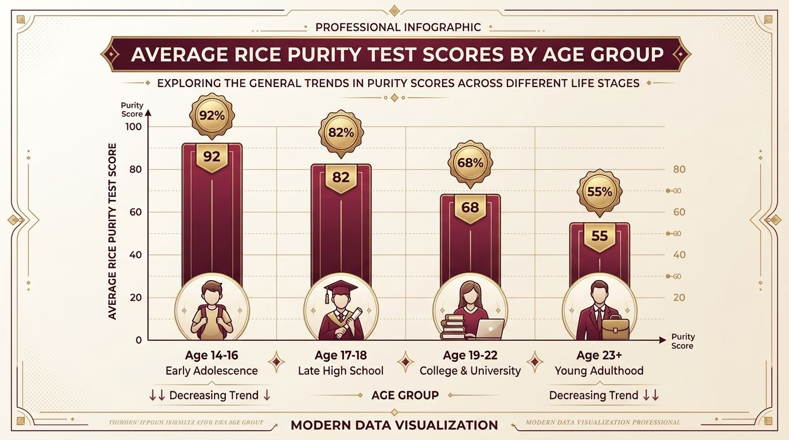

Average Rice Purity Score by Age, Country & Demographics
What is the average rice purity score across different age groups, high schools, universities, and countries? When taking the 100-question quiz, participants frequently wonder how their individual result measures up against broader peer benchmarks. Rather than wondering whether your score is unusually high or surprisingly low, examining demographic research offers meaningful clarity on how life experience unfolds over time.
If you haven't received your official number yet, you can take the official 100-question Rice Purity Test right now before exploring the global statistics below.
Key Takeaways: Average Rice Purity Scores at a Glance
- Global Overall Average: The aggregate median score across all test participants is 68.
- High School Benchmark (Ages 14–17): Averages between 82 and 94, reflecting initial social milestones and living under parental roofs.
- College Undergraduates (Ages 18–22): Average settles between 62 and 74, with freshmen experiencing a rapid 10-point drop by year two.
- Young Adults (Ages 23+): Stabilizes between 45 and 62 as independent living and professional careers establish.
- International Variations: Nations with earlier legal drinking ages (such as the UK and Australia) report slightly lower averages (65–67), while countries with stronger familial living traditions average higher (72–76).

Average Rice Purity Scores by Age Group
Age is by far the single most influential variable determining a test taker's score. Because the test operates on an irreversible checklist—where points are permanently deducted for life events already experienced—scores naturally decline as individuals age and encounter new milestones.
| Age Group | Life Stage | Average Score | Common Range | Primary Experience Milestones |
|---|---|---|---|---|
| 13 – 15 | Early Adolescent / Middle School | 92 | 88 – 98 | Sneaking snacks, movie theater pranks, first innocent crushes, school rules. |
| 16 – 17 | High School Juniors & Seniors | 82 | 76 – 90 | Driver's license freedom, holding hands, first dates, staying out past curfew. |
| 18 – 19 | College Freshmen / First Independence | 72 | 64 – 82 | Dorm room parties, orientation week icebreakers, pulling all-nighters, new social circles. |
| 20 – 22 | Upperclassmen / University Graduates | 64 | 52 – 74 | Serious relationships, bars and clubs, off-campus apartments, spring break road trips. |
| 23 – 29 | Young Working Adults | 55 | 42 – 66 | Independent financial living, career milestones, cohabitation, diverse travel. |
| 30+ | Mature Adults | 48 | 35 – 60 | Extensive cumulative life experiences across career, travel, and long-term commitments. |
Ages 13 to 15: The Peak Innocence Years (Average: 92)
Early teens consistently land in the 90s. At this stage, social environments are centered around parental guidance, academic classes, sports teams, and digital media. Checking more than 10 boxes is unusual for this age group, and scores above 90 reflect healthy, age-appropriate innocence.
Ages 16 to 17: Developing Autonomy (Average: 82)
Upper-level high school students experience initial independence. Getting a driver's license, attending prom, having a romantic first date, or sneaking out after midnight are common factors that gently reduce scores from the 90s into the low 80s.
Ages 18 to 22: The Collegiate Transition (Average: 68)
This age bracket represents the steepest drop on the purity curve. Moving into college dormitories, encountering roommate culture, attending unsupervised social gatherings, and meeting people from diverse backgrounds accelerates social milestones. For a complete look at campus life traditions, read our Rice Purity Test for girls and college edition guide.
Average Rice Purity Scores by Country and Global Regions
Cultural norms, legal drinking thresholds, and campus traditions substantially influence average scores worldwide. Below is a comparative breakdown of verified international survey averages:
| Country / Region | Average Score | Legal Drinking Age | Cultural Context & Campus Lifestyle |
|---|---|---|---|
| United States | 67.4 | 21 | Greek life, dorm orientation rituals, spring break traditions, high viral sharing. |
| Canada | 68.9 | 18 / 19 | Similar campus culture to USA; slightly higher baseline innocence in rural provinces. |
| United Kingdom | 65.2 | 18 | Pub culture, Freshers' Week events, university societies foster early nightlife. |
| Australia & NZ | 66.8 | 18 | O-Week campus festivals, coastal road-tripping, early social independence. |
| Germany & Central Europe | 69.1 | 16 / 18 | Early alcohol autonomy, but less emphasis on fraternity and Greek life culture. |
| East Asian Nations | 74.3 | 19 / 20 | Strong academic pressure, living with parents during college, traditional dating timelines. |
Why College Orientation Week Changes Scores Dramatically
The single most dramatic score adjustment in a young person's life occurs during university orientation week (O-Week). When freshmen first arrive on campus, survey records show an average starting score around 76. By the conclusion of freshman year, that same cohort averages 65—an 11-point decline in roughly nine months.
This phenomenon is not driven by reckless behavior, but rather by the natural consequences of communal student living:
- Living alongside roommates with diverse backgrounds and habits.
- Navigating communal dorm bathrooms and dining halls.
- Pulling late-night study marathons in campus libraries.
- Attending off-campus parties, frat events, and club social nights.
How to Interpret Your Score Without Judgment
It is vital to remember that an average is merely a mathematical midpoint, not a standard you are obligated to match. If your score is 88 while your classmates are in the 60s, it simply means your life path has prioritized different pursuits—such as competitive athletics, artistic hobbies, family responsibilities, or academic rigor.
Similarly, if your score is 52, it does not imply recklessness; it indicates you have lived an adventurous, socially exploratory early adulthood. To see the full meaning of each score tier, explore our comprehensive Rice Purity score meaning chart.
Frequently Asked Questions About Average Purity Scores
What is considered a normal Rice Purity Test score?
For college students, any score between 60 and 80 is considered completely typical. For high school students, scores between 80 and 95 represent the standard demographic average.
Is it possible for your score to increase over time?
No. Because the quiz tests cumulative lifetime experiences, once you have experienced an item, you cannot 'uncheck' it in future years. Scores can only remain constant or decline.
Why do UK and Australian students average slightly lower scores?
Legal drinking ages of 18 in the UK and Australia allow university students to frequent pubs, clubs, and live music venues legally upon entering college, accelerating nightlife milestones.
How does Rice University's test compare to generic purity quizzes?
The 1924 Rice University test is the historical 100-question gold standard. Learn more in our guide on Rice Purity Test vs general purity tests.